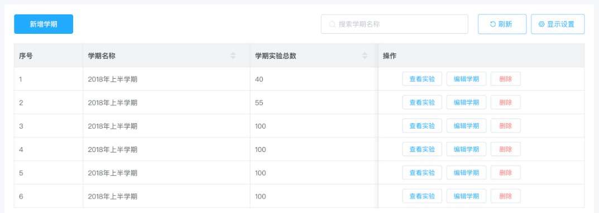
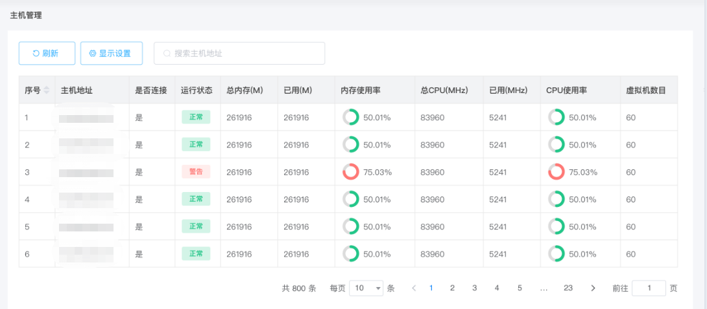
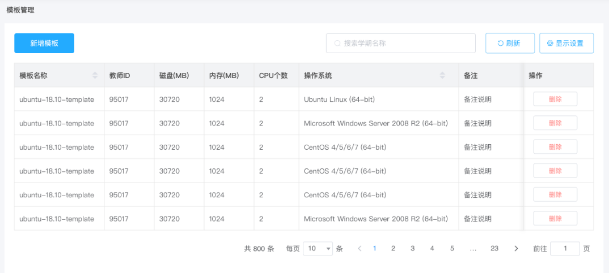
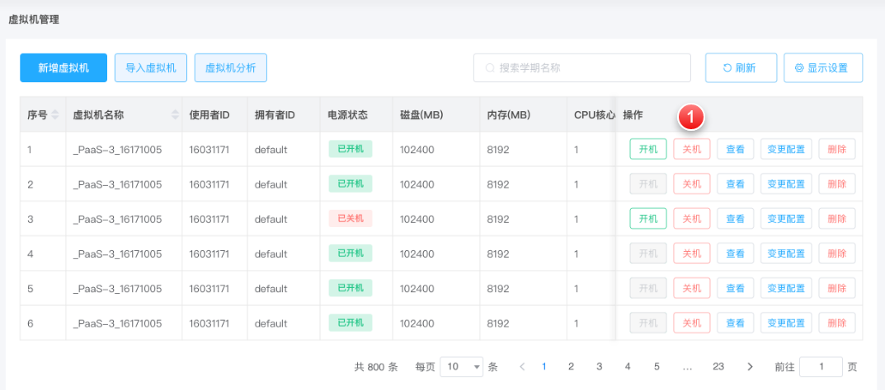
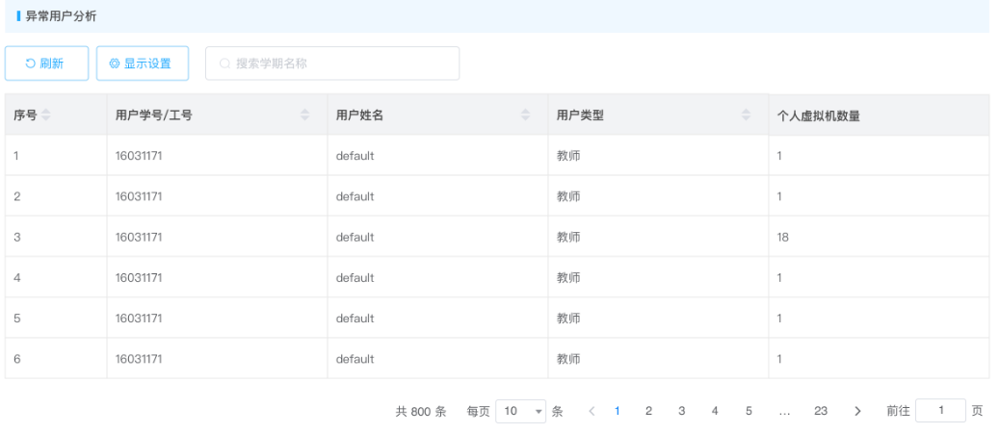
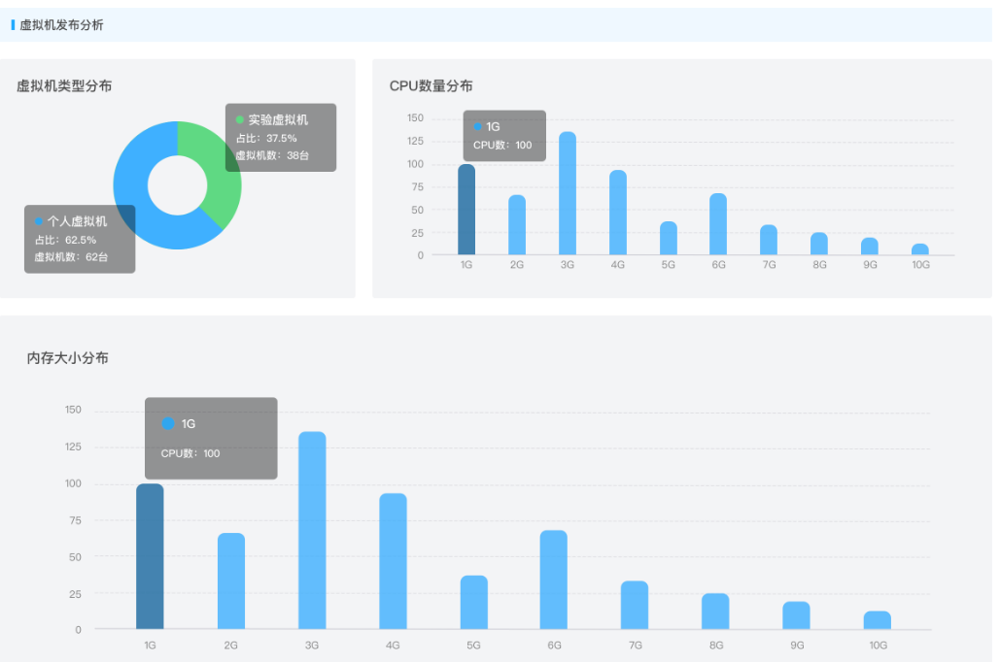
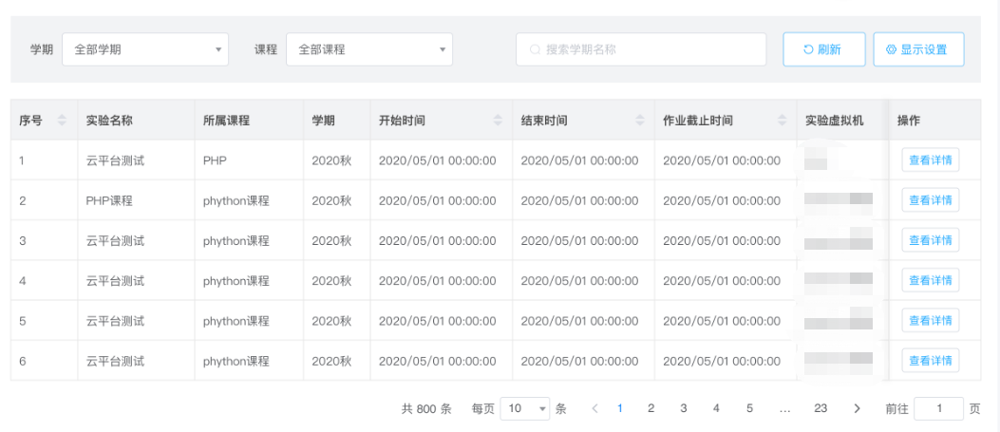
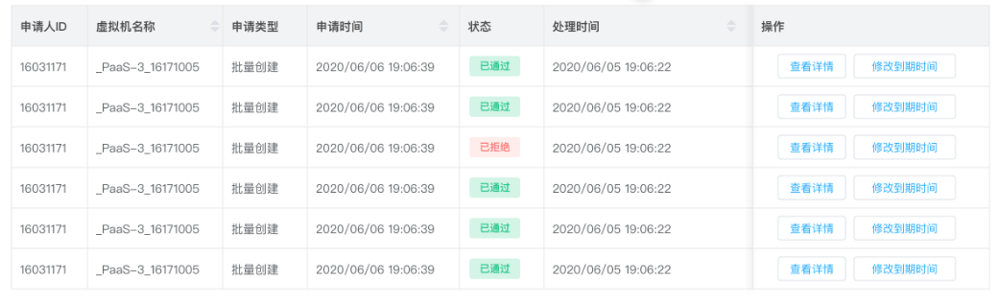

软件学院云管理平台用户手册—管理员版
一、学期管理
初始化学期信息，用于教师创建本学期课程任务，展示各学期任务数量统计，查看相关课程和实验信息。

二、主机管理
本功能是为管理人员对物理主机的维护、查看、添加新的节点所用，直观展示物理机的健康状况，资源使用情况以及在巡行的虚拟机数量。

三、虚拟机管理
1、模板管理
模板是云平台生产虚拟机的基础，管理员可以对各类操作系统创建相应的模板，仅安装必要的组建，并对系统进行优化后转换为模板，如需修改在将模板转化为虚拟机即可进行。

2、管理虚拟机
点击虚拟机管理，查看虚拟机详情，查看已有虚拟机的数量、配置、IP地址、所有者等信息。

3、异常虚拟机
平台异常虚拟机分析，查看异常虚拟的信息（与虚拟机管理同），异常的用户类型，名称，虚拟机的分布可视化展示。


四、实验管理
管理员查看历次实验相关信息

五、审批管理
该功能用于处理和查看平台生产的虚拟机订单。
